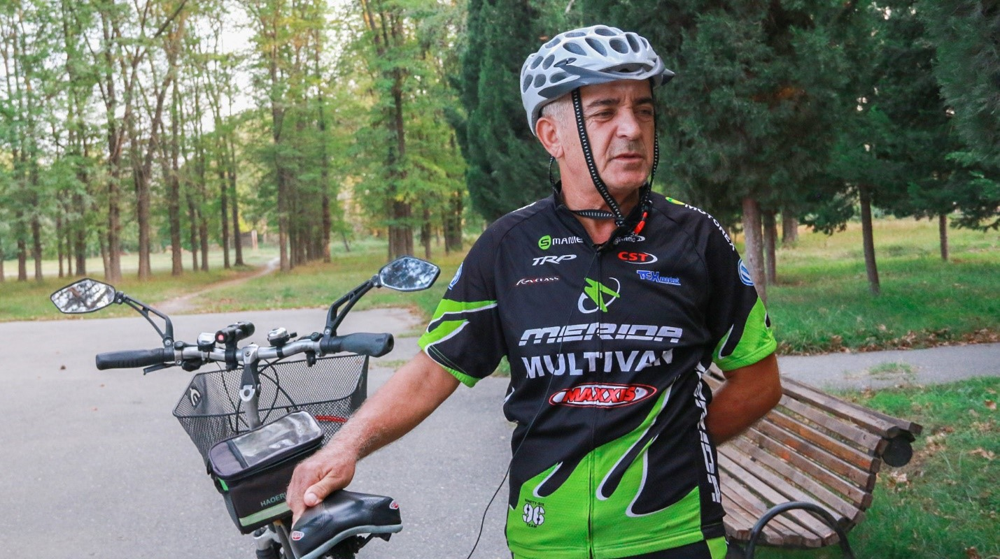

Забравете всичко, което знаехте за хондропротекторите. Това лекарство ще помогне дори в най-тежките случаи.
Известен факт: болните стави водят до инвалидна количка и непълноценен живот. Но историите на излекуваните ни карат да вярваме, че не трябва да се отчайваме дори и в най-трудните случаи.
Ето един пример: Стефан Костадинов е победител в много състезания и редовен участник в маратони по колоездене. Стефан е на 62 и познава артрита от първа ръка. Но благодарение на едно съвременно и евтино лекарство, пенсионерът успя да се върне към пълноценен живот.
Точно за него Стефан разказа на нашия репортер.
 Стефан Костадинов
Стефан Костадинов
Журналист: Как мина рехабилитацията Ви след болестта и как попаднахте в колоезденето?
Стефан: Започнах от малкото: утринна гимнастика и бягане. Пък и моите деца ми подариха велоергометър – трябваше да се науча. Веднъж си помислих: ами аз защо като глупак въртя педалите затворен между четири стени? Имам обикновен велосипед, който стана основният ми транспорт.
Някак си научих за маратона по колоездене «за тези, които са над…». Реших: «Никога не се знае?» И в първото състезание през живота си печелих първо място. Беше неочаквано, но много вдъхновяващо. Ако не беше победата, то участието ми в маратона, може би, щеше да остане просто един епизод от живота ми.
Журналист: Колко дълго страдахте от артрит?
Стефан : Артритът е с мен повече от десет години. Болките бяха постепенни, мъчителни. Не можеш да мръднеш без обезболяващи. Артритът е болест, за която никога не можеш да забавиш. Само тези, които го знаят, ще ме разберат. Послушах всички съвети, на места дори абсурдни. Сега щях да кажа, че съм ку-ку, но преди четири години се опитах да се лекувам дори с тор. Външно, за щастие.
Да, понякога физическата болка блокира критичното мислене.
Журналист: С какво, все пак, излекувахте артрита си?
Стефан: Моето спасение беше . Когато едва бях започнал курса с това лекарство, бях морално подготвен за най-лошото, но не загубих вяра в най-доброто.

И «чудото» се случи: още през първата седмица след като започнах курса почувствах, че се чувствам по-добре. Не го взех на сериозно, защото бях свикнал да се отнасям скептично към всичко. Реших, че просто е преминал острия период и е дошло временно облекчение. Но минаха седмица-две, а аз се чувствах все по-добре.
След завършване на курса с , си направих всички необходими изследвания. Моят лекар беше, в добрия смисъл на думата, шокиран не по-малко от мен – всички показатели бяха идеални, както при абсолютно здрав човек, който никога не е имал проблеми със ставите.
На какво се дължи чудотворното действие на ? Попитахме известния ревматолог професор Александър Йорданов.
 Александър Йорданов
Александър Йорданов
Капсулите ги наричат пето поколение хондропротектори. Състои се от три групи компоненти – болкоуспокояващи, обеззаразяващи и регенериращи хрущялната тъкан. По този начин той може да замени няколко лекарства наведнъж. И силата му на въздействие върху болестта е многократно по-висока от тази на другите известни лекарства.
Капсулите не са обикновени хондропротектори. Той не само предпазва ставата от по-нататъшно разрушаване. Той задейства процеса на регенерация на тъканите.
Това е особено забележително средство, защото се състои изключително от естествени компоненти и няма никакви странични ефекти.»
Въпреки високата си ефективност, едва ли ще го намерите в аптеките. За щастие нашата редакция успя да се свърже с производителя и да намери неговия официален сайт,където можете да поръчате без надценки от аптеките.
Коментари
Стефан, благодаря Ви, че споделихте с нас това страхотно средство! Поръчах го, чакам пратката с нетърпение
И аз си поръчах
Имах артрит на лакътните стави. Силно възпаление и непоносима болка. Лекуващият лекар ми назначи , много трудно го намерих в аптеката, така че много благодаря за линка!
Благодаря Ви за това лекарство!! Последните ми 3 години са просто катастрофа със ставите. Почти спрях да ходя нормално! Спасение стана . Честно казано, не вярвах, че това ще помогне. Но в крайна сметка след два дни почувствах значително облекчение. Сковаността и болката изчезнаха за една седмица. Ставите се възстановиха напълно за около 1,5 месеца. Това потвърди дори прегледа в поликлиниката. Препоръчвам го на всички.
Прочетох повече за на официалния сайт. Впечатли ме! Поръчах си го докато е в наличност.
Аз съм на 50. Опитах миналата година. Той и мен ме спаси. Имах болки в ставите на пръстите. Сега те не ме болят. Вземах го сам, не отидох на лекар.
Оставих заявка, чакам колета! Благодаря за статията и Стефан за историята! Браво на теб, продължавай така!!
Приятелката ми вземаше Оптимув. Тя отдавна страдаше от ставите си. На нея много добре и помогна. Похвали го.
Оптимув е отлично средство за лечение на ставите. Проверих го върху себе си. Цял живот ме боли кръста. Наследствен проблем. Обиколих всички правачи, масажисти и народни лечители. През последните години вече трудно завързвах връзките на обувките. След това прочетох във вестника за това лекарство. Реших да опитам, поръчах го на официалния сайт. Не се излекувах напълно, но стана значително по-добре. Никакви инжекции, таблетки и мехлеми не помогнаха, така както Оптимув. Много съм доволен от него.
Да, във вестника писаха за за възстановяване на ставите. Също така писаха, че това е пробив в лечението. Трябва да опитам да си го поръчам
Вчера го получих с куриер. Вече започнах курса
Половин живот имам болки в коленете. По съвет на лекаря започнах да взимам Оптимув. В резултат на това вече половин година нищо не ме боли. Преди, както и Вие, Стефан, не можех да ходя, а сега също започнах да спортувам – всеки ден сутрин бягам.
Благодаря за линка! Интересно. Оставих заявка.